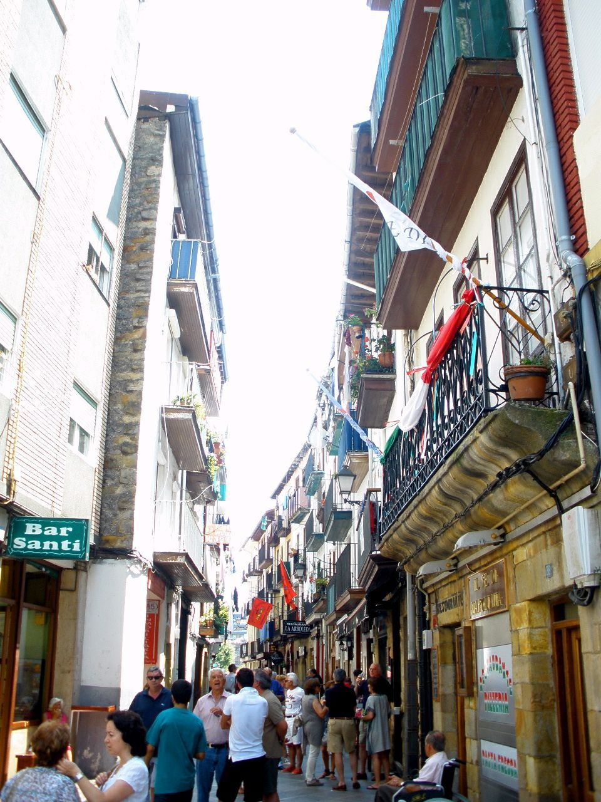

Contra su provincia · Elecciones: 2004-2023
Castro-Urdiales, el municipio cántabro donde el PSOE ganó por 19 puntos mientras el PP ganaba Cantabria
El 23J, el PP ganó en Cantabria con el 42,1 %, frente al 33,3 % del PSOE. En Castro-Urdiales el resultado fue el contrario: PSOE 45,5 %, PP 26,8 %. Por su perfil, a Castro le correspondería dar a PP, Vox y Cs un 57,1 %; les dio el 37,7 %. Es la 2.ª mayor diferencia a la baja de los municipios españoles de más de 10.000 habitantes.
Dato: verificable y reproducible
La pregunta: ¿Por qué vota tan distinto de su comunidad el municipio cántabro más cercano a Bizkaia?
Una isla en el mapa cántabro
DatoCastro-Urdiales es el municipio más oriental de la costa de Cantabria, en el límite con Bizkaia, y tiene 33.092 habitantes. El 23J votó así: PSOE 45,5 %, PP 26,8 %, Sumar 14,2 % y Vox 10,9 %.
DatoEn el conjunto de Cantabria, PP, Vox y Cs sumaron el 56,2 %. En Castro, el 37,7 %: 18,5 puntos menos.
Lo que dice el modelo
DatoCastro tiene una renta de 22.468 euros por unidad de consumo y un 38,4 % de vecinos con estudios superiores. Con ese perfil y su provincia, el modelo de esta serie le asigna a la derecha un 57,1 %. Votó 19,4 puntos menos. Solo Puerto Real se aparta más en toda España.
Siempre por debajo de Cantabria
DatoLa distancia no es nueva. En 2004, la derecha sacó el 37,8 % en Castro y el 51,9 % en Cantabria. En ninguna de las ocho generales desde entonces ha bajado de 10 puntos.
DatoEl PSOE quedó por delante del PP en Castro en 2004 (49,6 %), en 2008 (54,4 %), en las dos generales de 2019 y en 2023 (45,5 %); el PP, en 2011, 2015 y 2016. En 2015, el espacio de Podemos e IU sacó allí el 35,2 %.
El voto local
DatoEn las municipales de 2023 el PSOE fue la lista más votada, con el 32,4 %, y las candidaturas locales y otras sumaron el 28,9 %.
Sobre el terreno
DatoJunto al castillo-faro de Castro-Urdiales se alza la iglesia de Santa María de la Asunción, comenzada en el siglo XIII y considerada la principal muestra del gótico en Cantabria. Fuentes: 1, 2
Lo que no sabemos
- HipótesisSi la cercanía a Bilbao y la llegada de vecinos desde Bizkaia explican la diferencia. Es la hipótesis más citada, pero esta pieza no tiene datos de procedencia de los vecinos ni dos fuentes que la confirmen.
Los datos
| Elección | Derecha Castro | Derecha Cantabria | PSOE Castro | PP Castro |
|---|---|---|---|---|
| 2004 | 37,8 | 51,9 | 49,6 | 37,8 |
| 2008 | 36,0 | 50,3 | 54,4 | 36,0 |
| 2011 | 40,5 | 52,2 | 37,3 | 40,5 |
| 2015 | 39,0 | 52,6 | 23,0 | 25,0 |
| 2016 | 41,6 | 56,2 | 25,0 | 28,9 |
| abr. 2019 | 33,6 | 48,0 | 33,8 | 13,4 |
| nov. 2019 | 32,2 | 45,6 | 32,6 | 17,0 |
| 2023 | 37,7 | 56,2 | 45,5 | 26,8 |
Método y fuentes
- Qué se compara
- Castro-Urdiales frente al conjunto de Cantabria en las ocho generales de 2004 a 2023, y frente a lo que predice el modelo municipal de esta serie.
- Límites
- El PRC no se presentó a las generales de 2023; en años anteriores su voto queda en «otros». «Derecha» suma PP, Vox y Cs.
- Metodología completa
- Cómo se calculan los porcentajes, el modelo, los gemelos y los escaños
- Fuentes
- Ministerio del Interior, resultados electorales por mesa (Infoelectoral). Congreso 2004-2023 vía pollspaindata, commit ee5ecda; municipales 2007-2023 de los ficheros de Infoelectoral
- INE, Atlas de Distribución de Renta de los Hogares 2023 (renta, edad, población), vía ineAtlas.data
- INE, Censo de Población y Viviendas 2021 (estudios, paro, extranjeros)
- Autoría
- Nacho
- Revisión de datos y texto
- Nacho, 2026-10-07
- Publicado · actualizado
- 2026-10-06 · 2026-10-07
- Correcciones
- Ninguna. Historial del Atlas
En esta serie
- El PSOE ganó en cuatro grandes ciudades del sur de Madrid mientras el PP ganaba la provincia por 13 puntos
- Vigo, la única gran ciudad gallega donde ganó el PSOE el 23J, y donde en mayo le dio el 61 %
- Alcoi, la ciudad que vota a la izquierda en la provincia de Alicante: el PSOE le sacó 10,7 puntos al PP